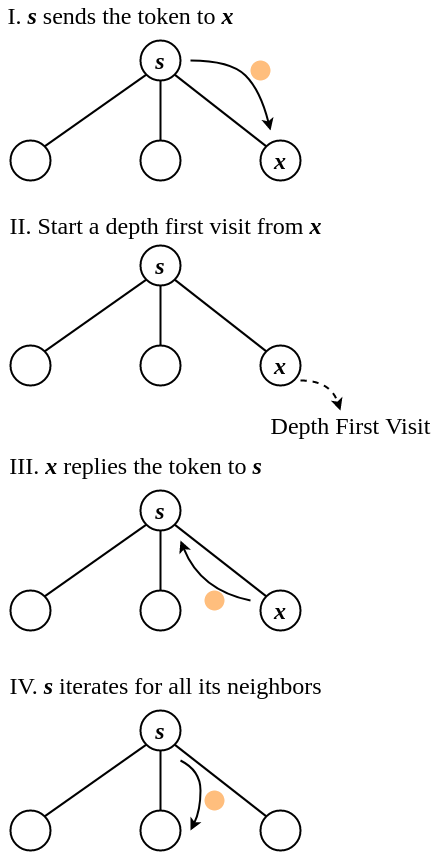

ADRC - Lesson 07
Indice
1 Spanning tree construction
Uno spanning tree, o albero ricoprente, è un sottoinsieme di archi \(T \subseteq E\) tale che
il grafo \(G=(V,T)\) risulta essere connesso e aciclico.
Come visto per il protocollo di broadcast, è spesso utile riuscire a calcolare uno spanning tree su una rete in maniera distribuita.
La definizione di tale problema è la seguente
- Assunzioni:
- Single initiator esiste un solo nodo che in risposta ad uno stimolo esterno o spontaneamente avvia il protocollo.
- Bidirectional links il grafo di rete è non diretto
- Total reliability si ha certezza che un messaggio trasmesso su un arco arriva sempre a destinazione in un tempo finito e senza errori
- Connectivity il grafo di rete \(G\) è connesso
- Configurazione iniziale: ogni nodo \(x \in V\) conserva un sottoinsieme di vicini denominato con \(\texttt{tree-neig}(x)\), che rappresenta i relativi vicini nello spanning tree. Inizialmente tale insieme è inizializzato come vuoto \(\texttt{tree-neig}(x) = \lbrace \rbrace\).
- Configurazione finale: uno stato in cui tutti i nodi hanno nell'insieme \(\texttt{tree-neig}(x)\) tutti e soli i nodi vicini nello spanning tree ricavato dal protocollo.
2 Single Source Shout Protocol
Immedesimandosi in un generico nodo \(x\) ci si può chiedere:
come decido chi saranno i miei vicini nello spanning tree?
Semplicemente basta chiedere ai propri vicini se appartengono già allo spanning tree che si sta costruendo, e in base alla risposta agire di conseguenza:
- se il nodo già appartiene allo spanning tree allora lo si scarta.
- se il nodo ancora non appartiene allora gli si propone se vuole diventare un nodo figlio.
In generale potrebbe capitare che un nodo riceva molteplici richieste di diventare nodo figlio, però
semplicemente può rispondere YES alla prima proposta, e NO a tutte le altre.
Per ridurre ulteriormente il numero di messaggi, quando il nodo \(x\) diventa parte dello spanning tree,
manda in broadcast a tutti i suoi vicini (eccetto al nodo padre) la proposta di diventare nodo figlio.

Figura 1: Spontaneamente la sorgente avvia il protocollo

Figura 2: Possibili situazioni
Definiamo quindi l'insieme degli stati del processo
\begin{align*} S &= \lbrace \texttt{INIT}, \texttt{IDLE}, \texttt{ACTIVE}, \texttt{DONE} \rbrace\\ S_{init} &= \lbrace \texttt{INIT}, \texttt{IDLE} \rbrace\\ S_{final} &= \lbrace \texttt{DONE} \rbrace \end{align*}if self.state == "INIT":
spontaneusly:
self.root = True
self.tree_neig = {}
send(Q) to self.neighbors
self.counter = 0
self.state = "ACTIVE"
if self.state == "IDLE":
receiving(Q):
self.root = False
self.parent = Q.sender
self.tree_neig = {Q.sender}
send("YES") to Q.sender
self.counter = 1
if self.counter == len(self.neighbors):
self.state = "DONE"
else:
send(Q) to self.neighbors - {Q.sender}
self.state = "ACTIVE"
if self.state == "ACTIVE":
receiving(Q):
send("NO") to Q.sender
receiving(R):
if R.msg == "YES":
self.tree_neig = self.tree_neig + {R.sender}
self.counter += 1
elif R.msg == "NO":
self.counter += 1
if self.counter == len(self.neighbors):
self.state == "DONE"
if self.stat == "DONE":
None
Code 1: Pseudocodice python-like del protocollo Shout
2.1 Terminazione del protocollo
Il protocollo Shout è molto simile al protocollo Flood, con l'aggiunta di messaggi di feedback YES/NO.
Dato che siamo sotto l'assunzione che \(G\) è connesso, allora certamente ogni nodo \(x\) (eccetto la sorgente) riceverà almeno una richiesta Q di diventare figlio.
Perciò ogni nodo nello stato IDLE passerà allo stato ACTIVE, con il proprio contatore pari a 1.
Per ogni richiesta ricevuta tutti i nodi risponderanno YES o NO.
Dato che prima di entrare nello stato DONE un nodo deve ricevere una risposta da tutti i vicini, e dato che per costruizione tutti rispondono alle richieste
allora prima o poi tutti i nodi passerranno dallo stato ACTIVE allo stato DONE, terminando localmente il proprio task.
2.2 Correttezza
Si vuole dimostrare che l'unione di tutti i \(\texttt{tree-neig}(x)\) è uno spanning tree per la rete \(G\).
Per prima cosa bisogna dimostrare le coerenza degli insiemi \(\texttt{tree-neig}(x)\), ovvero che \(x\) ha come vicino \(y\) nello spanning tree (\(y \in \texttt{tree-neig}(x)\))
allora anche \(x\) deve risultare essere vicino di \(y\) (\(x \in \texttt{tree-neig}(y)\)).
Questo è facilmente verificabile: certamente uno tra \(x\) e \(y\) deve necessariamente essere il nodo padre, supponiamo \(x\) senza perdita di generalità.
Dato che \(y \in \texttt{tree-neig}(x)\), e dato che stiamo assumendo che \(y\) è figlio di \(x\), allora vuol dire che \(y\) avrà risposto YES alla proposta di \(x\), e per
costruzione del protocollo \(x\) che è nello stato ACTIVE aggiungerà \(y\) nel suo vicinato.
Contrariamente se \(y\) ha risposto YES vuol dire che era nello stato IDLE, e che la prima richiesta ricevuta è stata quella di \(x\).
Per costruzione del protocollo, \(y\) contra \(x\) come nodo padre, e lo aggiungerà nel suo vicinato.
A questo punto è necessario dimostrare che l'unione di tutti i \(\texttt{tree-neig}(x)\) è connesso.
Anche questo è banalmente verificabile dal fatto che ogni nodo \(x\) (eccetto la sorgente) è collegato al proprio genitore tramite una sequenza di YES-links
che risale fino alla sorgente.
Perciò data una qualsiasi coppia di nodi \(x,y\), essi saranno connessi dal cammino \(x \leadsto s \leadsto y\), dove \(s\) è il nodo sorgente.
Infine non resta che dimostrare che il grafo risultante dal protocollo è aciclico.
Questo si può inferire dal fatto che ogni nodo (eccetto la sorgente) invia una sola risposta YES, la quale permetterà al nodo di "appendersi" all'albero.
Supponiamo quindi per assurdo che da nodo \(x\) esistano due cammini semplici distinti fino alla sorgente \(s\) che formano un ciclo.
Anche se i dui cammini possono iniziare "scendendo" di livello, dato che entrambi i cammini risalgono alla sorgente
allora certamente da un certo punto in poi passeranno per un arco che parte da un nodo figlio verso un nodo padre salendo di livello.
Consideriamo solo uno dei due lati del ciclo (tanto il ragionamento è simmetrico).
Supponiamo che il primo arco del cammino che risale di livello è un certo \((a,b)\), dove \(b\) è genitore di \(a\).
Dato \((a,b)\) è il primo arco risalente, vuol dire che prima di prendere \((a,b)\) si è scesi di livello con tutti archi del tipo PADRE->FIGLIO.
Però sappiamo che ogni nodo ha un singolo nodo padre, perciò per arrivare ad \(a\) certamente si sarà preso l'arco \((b,a)\).
Questo però non può accadere in quanto nei cammini semplici non si può ripercorrere due volte uno stesso arco, perciò entrambi i lati dell'ipotetico ciclo
devono necessariamente partire \(x\) a risalire.
Ma dato che x ha un solo padre allora esiste un solo cammino (risalente) da \(x\) alla sorgente \(s\).
2.3 Message complexity
Come accennato in precedenza il protocollo Shout è una sorta di protocollo Flood con l'aggiunta di messaggi di feedback.
Perciò si può intuire che la message complexity del protocollo Shout è due volte quella del protocollo Flood.
\[
MSG(\texttt{SHOUT}) = 2 \cdot MSG(\texttt{FLOOD})
\]
Andiamo però a fare un'analisi più dettagliata per verificare l'intuizione.
Consideriamo che i messaggi che passano sugli archi sono del tipo Q, di richiesta di diventare figlio, e di tipo R, di risposta, il quale a sua
volta può essere di tipo YES o NO.
Si vuole quindi contare per ogni tipologia di messaggi Q, YES, NO quanti ne vengono trasmessi per ogni arco.
Iniziamo però considerando quali situazioni è possibbile che accadano e quali no:
- Casi possibili
- caso
Q-YES, ovvero nel caso in cui su di un arco passa prima una propostaQe poi la rispostaYES. - caso
Q-Q, quando due nodi vicini passano nello stato active e si scambiano reciporcamente una propostaQ. - caso
NO-NO, diretta conseguenza del caso precedente.
- caso
- Casi impossibili
- caso
NO-YES, non può accadere in quanto il nodo sinistro per rispondereNOdeve prima aver ricevuto una richiesta dal nodo destro, il quale avrà già un padre e quindi non può rispondere nuovamenteYES. - caso
YES-YES, per inviarsi reciprocamente il messaggioYES, vuol dire che entrambe le estremità dell'arco hanno inviato il messaggioQ, ma ciò implica che hanno già un padre e che quindi hanno già inviatoYESa un altro nodo.

Contiamo ora quanti messaggi vengono scambiati per ogni caso possibile
- caso
Qmessages:
il messaggio
Qviene inviato nei casiQ-YESeQ-Q. Il casoQ-YESaccade esattamente una volta per ogni nodo eccetto la sorgente, ovvero \(n-1\) volte. Il casoQ-Qaccade su tutti gli archi del vicinato di un nodo eccetto che per l'arco per il quale il nodo è diventato figlio (ovviamente escludendo la sorgente). Perciò avremo \(m\) archi, meno un arco per ogni nodo esclusa la sorgente, ovvero meno \(n-1\) archi. Perciò in totale verranno scambiati \(2(m - (n-1)) - (n-1) = 2m - n + 1\) messaggi di tipoQ.YESmessages:
il messaggio di tipo
YESviene scambiato solamente nella situazioneQ-YES, per un totale di \(n-1\) volte.NOmessages:
il messaggio di tipo
NOviene trasmesso per due volte nella situazioneNO-NO, ovvero di conseguenza al casoQ-Q, per un totale di \(2(m - (n - 1))\).La message complexity del protocollo
\begin{align*} MSG(\texttt{SHOUT}) &= (2m - n + 1) + (n - 1) + (2m - 2(n - 1))\\ &= 4m - 2n + 2 = 2(2m - n + 1)\\ &= 2 \cdot MSG(\texttt{FLOOD}) \end{align*}Shoutsarà la somma dei precedenti valori
2.4 Ottimizzazione - Protocollo Shout+
È possibile abbattere il fattore \(4\) dalla complessità del protocollo Shout semplicemente facendo la seguente osservazione:
lo scambio di messaggi di tipo NO sono in realtà superflui, se un nodo \(x\) riceve una proposta Q da un nodo \(y\) allora certamente
\(y\) è nello stato ACTIVE, e quindi avrà già un nodo padre, perciò è inutile che \(x\) mandi una proposta ad \(y\).
Perciò ricevere un messaggio Q può essere interpretato come la ricezione di un messaggio NO dalla stessa porta.
if self.state == "INIT":
spontaneusly:
self.root = True
self.tree_neig = {}
send(Q) to self.neighbors
self.counter = 0
self.state = "ACTIVE"
if self.state == "IDLE":
receiving(Q):
self.root = False
self.parent = Q.sender
self.tree_neig = {Q.sender}
send("YES") to Q.sender
self.counter = 1
if self.counter == len(self.neighbors):
self.state = "DONE"
else:
send(Q) to self.neighbors - {Q.sender}
self.state = "ACTIVE"
if self.state == "ACTIVE":
receiving(Q):
self.counter += 1
if self.counter == len(self.neighbors):
self.state == "DONE"
receiving("YES"):
self.tree_neig = self.tree_neig + {R.sender}
self.counter += 1
if self.counter == len(self.neighbors):
self.state == "DONE"
if self.stat == "DONE":
None
Code 2: Pseudocodice python-like del protocollo Shout+
Per quanto riguarda la message complexity del nuovo protocollo ottimizzato basta osservare che non può mai accadere la situazione NO-NO, ovvero
quando su un arco verrà trasmesso due volte il messaggio NO.
Perciò la message complexity del protocollo Shout+ sarà
\[
MSG(\texttt{SHOUT+}) = MSG(\texttt{SHOUT}) - 2(m - (n - 1)) = 2m
\]
Riguardo invece la terminazione locale del protocollo, ogni nodo sa che il suo compito è terminato nel momento in cui passa allo stato DONE.
Sarebbe interessante sapere se un nodo è in grado di capire quando il processo termina globalmente.
Certamente se la sorgente \(s\) è in grado di sapere quando lo spanning tree è completato, allora potrebbe mandare una notifica in broadcast per avvertire tutti gli altri.
Il problema è che non ogni nodo ha solamente una visione locale della rete in cui si trova, perciò a meno che non ci sia un nodo che riesca ad osservare lo stato della
rete dall'alto non è possibile sapere solo col protocollo Shout se il processo di costruzione dello spanning tree è terminato.
OSS.1 si può ottimizzare ulteriormente il protocollo in modo da abbattere il fattore \(\Omega(m)\)?
La risposta è no. Semplicemente perché per costruire uno spanning tree bisogna informare in broadcast tutti i nodi della rete quantomeno che il protocollo è iniziato.
Se fosse possibile farlo, allora avremmo trovato anche un protocollo di broadcast che esegue il suo task in tempo \(< m\), e sappiamo che non è possibile sotto
tali assunzioni (BL, UI, C, TR).
THM l'esecuzione del protocollo di broadcast genera uno spanning tree entrante1 della rete.
Proof: basta semplicemente che ogni nodo \(x\) conservi come variabile \(father(x)\) il nodo dal quale per primo ha ricevuto l'informazione.
OSS.2 Si può osservare che lo spanning tree costruito con il protocollo Shout (o con la sua versione ottimizzata) dipende fortemente
dalla singola esecuzione e non dal protocollo, in quanto i ritardi di trasmissione variano ogni volta.
Ciò implica che maneggiando adeguatamente i ritardi di trasmissione potrebbe accadere che \(diam(\texttt{SPT}) >> diam(G)\).
In base a quest'ultima osservazione si potrebbe voler cercare di costruire uno spanning tree con diametro non troppo maggiore del diametro dell'intera rete.
3 Depth First Traversal (DFT) Protocol
Consideriamo un problema in cui un nodo iniziale possiede un token, e di volere che questo token (non replicabile) venga passato tra tutti i nodi della rete.
In pratica si tratterebbe di fare un broadcast del token, senza però l'opportunita di duplicare il token e di inviarlo a più vicini contemporaneamente.
Il protocollo Depth First Traversal (d'ora in poi definito con DFT) permette di risolvere questo problema eseguendo una visita in profondità,
generando così uno spanning tree della rete.
L'idea del protocollo è la seguente:
- quando un nodo \(x\) riceve per la prima volta il token da un nodo \(y\), \(x\) deve ricordarsi che \(y\) è il suo padre bello spanning tree e poi
deve inviare ad uno dei suoi vicini (eccetto \(y\)) il token, aspettando che ritorni indietro (
reply). - quando un nodo \(x\) che è già stato visitato riceve di nuovo il token lo rispedisce indietro al mittente specificando che è già stato visitato,
contrassegnando l'arco di ritorno come
back-edge. - quando un nodo \(x\) riceve il token indietro da \(z\), verifica se è un
back-edgee in tal caso può affermare che \(z\) non sarà un suo vicino nello spanning tree. Se invece la risposta è solamente il token (senza specificareback-edge) allora \(x\) sa che \(z\) è un suo figlio nello spanning tree. Dopodiché \(x\) inoltrerà il token ad un altro dei suoi vicini. - quando \(x\) avrà ricevuto indietro il token da tutti i suoi vicini lo inoltrerà nuovamente al padre.
Notare che il protocollo appena descritto è l'equivalente distribuita della visita in profondità ricorsiva, in cui la visita sul nodo \(x\) termina quando
sarà terminata la vista in profondità su tutti i suoi vicini (eccetto che per il nodo padre).
Il protocollo terminerà nel momento in cui la sorgente \(s\) avrà ricevuto il token indietro da tutti i suoi vicini.

3.1 Message complexity
Osservare che esistono tre tipologie di messaggi:
tokenquando un nodo inoltre il token per procedere con la visita.backquando un nodo già visitato restituisce il token al mittente.returnquando un nodo termina la propria visita è restituisce indietro il token al padre.
inoltre su ogni arco può passare solamente uno tra i messaggi back e return, mentre il messaggio di tipo token passa esattamente una volta su tutti gli archi.
Perciò la message complexity è esattamente \(2m \in \Theta(m)\).
Ricordiamo sempre che esiste un teorema che dimostra che, sotto le assunzioni in questione, non è possibile eseguire il broadcasting di una informazione in meno
di \(m\) messaggi, e dato che in questo caso sostanzialmente si sta facendo il broadcast del token, un lowerbound alla message complexity rimane \(\Omega(m)\).
3.2 Time complexity
Anche se il protocollo è asincrono ha senso parlare di time complexity, in quanto lo scambio di messaggi avviene in maniera totalmente sequenziale2. Perciò la time complexity è proporzionale alla message complexity.
3.3 Ottimizzazione
Osserviamo che in grafi molto densi una larga quantità di messaggi risolverà in messaggi di tipo back.
Perciò sarebbe ideale cercare di evitare che questo accada.
Un'idea è quella di far inviare una notifica a tutto il vicinato di \(x\) qual'ora \(x\) riceva il token per la prima volta (eccetto che al nodo padre, ovviamente).
Così facendo, tutti i vicini sapranno che \(x\) è già stato informato e non ci sarà più bisogno in futuro di ritrasmettergli il token, evitando così i messaggi di
tipo back.
Il grosso vantaggio, dal punto di vista temporale, è che \(x\) può mandare la notifica ai suoi vicini in maniera parallela.
Prima di proseguire all'inoltro del token, è necessario però che \(x\) riceva un ACK3 dal suo vicinato, in quanto disponendo in modo adeguato i ritardi
di trasmissione, potrebbe capitare che un suo vicino \(y\) riceva il token prima del messaggio di notifica, reinviando così nuovamente il token a \(x\).
In tale situazione non avremmo risolto nulla, in quanto \(x\) dovrebbe rispedire il token ad \(y\) con un messaggio di back.
3.3.1 Complexity
In questa ottimizzazione i tipi di messaggi scambiati sono:
tokenquando un nodo inoltre il token per procedere con la visita.visitedquando un nodo che ha appena ricevuto il token notifica i suoi vicini.ackla risposta di avvenuta notifica da parte dei vicini.returnquando un nodo termina la propria visita è restituisce indietro il token al padre.
Ogni nodo (eccetto la sorgente \(s\)) ricerà il token una sola volta, e inoltre invierà il messaggio di return una sola volta, per un totale
di \(2(n-1)\) messaggi.
Per quanto riguarda il messaggio di notifica visited, ogni nodo lo invierà a tutto il suo vicinato meno che al nodo da cui hanno ricevuto il token.
La sorgente sarà l'unico nodo che invierà la notifica a tutto il suo vicinato
Inoltre per ogni notifica visited corrisponde una risposta ack, quindi la message complexity sarà
ovvero il doppio del protocollo con messaggi di tipo back.
Come già accennato il vantaggio sta nella time complexity.
Infatti sappiamo che possiamo mandare i messaggi di notifica in parallelo, inoltre se il sistema è sincrono riceveremo i messaggi di ack nello stesso momento.
In un sistema sincrono in cui (senza perdita di generalità) tutti i messaggi sono trasmessi in una unità temporale, avremo che in soli due istanti (ovvero in tempo costante)
ogni nodo invierà le notifiche e riceverà le risposte.
Perciò il tempo necessario al completamento del task sarà:
- \(n-1\) per inviati di tipo
return. - \(n-1\) perché ogni nodo eccetto la sorgente riceverà esattamente un messaggio
token. - \(n\) perché ogni nodo invia le notifiche
visitedin parallelo ai suoi vicini. - \(n\) perché tutti i vicini di un nodo risponderanno in maniera sincrona con un
ack.
per un totale di \(4n - 2\).
Con questa ottimizzazione, anche se si "paga" un fattore 2 alla message complexity otteremo che la time complexity sara lineare in \(n\), e non più in \(m\). Ciò implica un miglioramento non indifferente se si considerano casi in cui la rete è molto densa, ovvero quando \(m \in \Theta(n^2)\).
4 Multiple Sources Spanning Tree Construction
Rilassiamo l'ipotesi Single Initiator e consideriamo il problema più generale in cui esiste un insieme \(I \subseteq V\) di nodi initiator.
THM sotto le sole assunzioni di BL, C e TR il problema della costruzione di spanning tree con multipli initiator non è deterministicamente risolvibile.
Proof: consideriamo una clique di 3 nodi \(x,y,z\), tutti e tre initiator.
Consideriamo il caso sincrono in cui tutti si attivano e iniziano il protocollo al tempo \(t_0\).
Dalle precedenti lezioni, sappiamo che presi dei nodi in uno stesso stato interno \(\sigma(v,t)\), allora essi da quel momento in poi si comporteranno alla stessa maniera,
dato che non sono in grado di distinguere una loro identità all'interno della rete.
Assodato questo fatto, allora non si potrà mai arrivare in uno stato in cui un nodo è padre e gli altri due figli, in quanto questo implicherebbe
che uno dei nodi si è comportato in maniera differente dagli altri due (contrariamente all'osservazione precedente) \(\square\).
Per risolvere questo problema è necessario risolvere un'altro problema: il problema della leader election.
Eletto un leader tra tutti i nodi initiator, esso potrà eseguire uno dei protocolli di costruzione di spanning tree a singola sorgente già noti.
Vedremo in futuro che il problema della leader election può essere risolto in maniera deterministica solamente se i nodi sono univocamente identificati
in maniera globale.